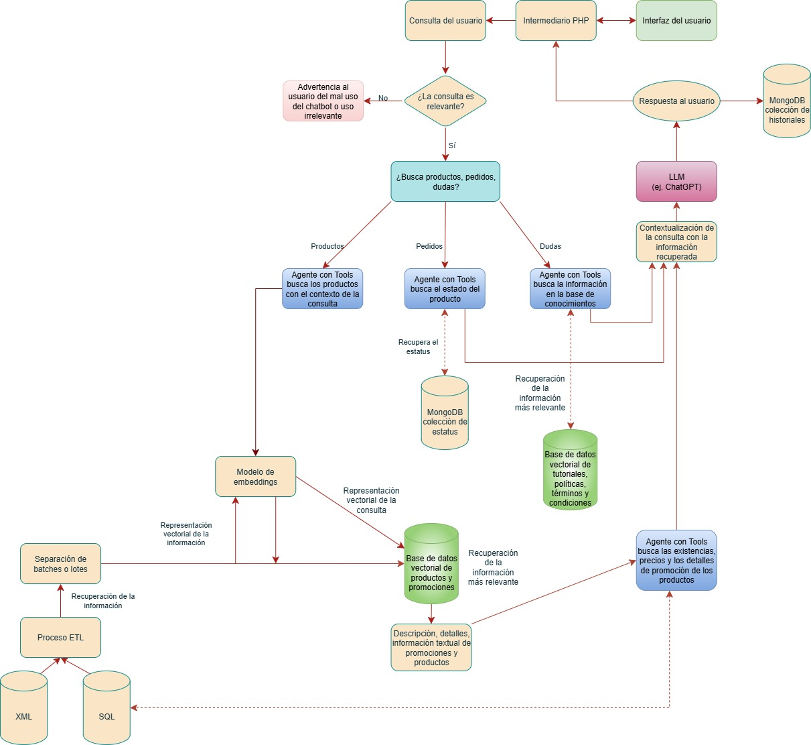

Documentación
1 Manual de instalación y despliegue.
1.1 Configuraciones importantes
- El proyecto está diseñado para ser desplegado en entornos Linux o Windows con Python 3.12.9. Requiere acceso a Ollama (para la ejecución de modelos open-source como
gemma3:12b), así como conectividad a una instancia de MongoDB y bases de datos MySQL. - La aplicación backend se expone a través de FastAPI en el puerto
8000. Es crucial asegurar que este puerto esté abierto y accesible en el entorno de despliegue. - Archivo
.envcon variables cargadas - Todas las credenciales y configuraciones sensibles se gestionan mediante un archivo de variables de entorno (
.env), garantizando la seguridad y facilidad de configuración.
1.2 Requisitios del sistema
- Python: Versión 3.12.9
- Pip: Última versión
- UV: Última versión (gestor de paquetes y entornos)
- Ollama: Instalado y en ejecución en el servidor para el hosting de modelos open-source.
- MongoDB: Acceso remoto configurado para las colecciones de historial, productos, ofertas y fichas técnicas.
- MySQL: Acceso remoto configurado para la extracción de datos de productos y precios.
1.3 Dependencias principales del sistema
langchain: Framework principal para la construcción de cadenas RAG y la orquestación del flujo del chatbot.tiktoken: Utilizado para el conteo preciso de tokens en las consutlas y respuestas, fundamental para la estimación de costos.ollama: Herramienta para servir modelos de lenguaje open-source localmente, comogemma3:12b, permitiendo flexibilidad en la elección del LLM.pymongo: Driver Python para la interacción con MongoDB, utilizado para el almacenamiento y recuperación de sesiones de usuario, historial de mensajes, fichas técnicas, y datos de productos/ofertas.mysql-connector-python: Conector para MySQL, empleado para la extracción de datos de producto, sus detalles y precios desde la base de datos relacional.faiss-cpu: Biblioteca para la búsqueda eficiente de similitudes, crucial para la creación y consulta de la base de datos vectorial donde se almacenan los embeddings de productos.gunicorn: Servidor WSGI utilizado para desplegar la aplicación FastAPI en producción, gestionando la concurrencia y el rendimiento.- Otras dependencias: Todas las demás librerías requeridas se detallan en el archivo
pyproject.toml. La instalación de este archivo se detalla más adelante.
1.4 Instalación del backend (API)
- Clonar el repositorio:
git clone https://github.com/anmerino-pnd/proyectoCT
cd proyectoCTCrear un entorno virtual e instalar dependencias:
Se recomienda usar
uvpor su eficiencia.
pip install uv # En caso de no estar instalado
uv venv
source .venv/bin/activate # Para Linux/macOS
# o `.venv\Scripts\activate` para Windows
uv pip install -e .Asegurarse de estar corriendo Ollama en el ambiente:
Verifica que el servicio de Ollama esté instalado y activo, y que el modelo
gemma3:12besté disponible.
curl -fsSL https://ollama.com/install.sh | sh # Para instalar Ollama
ollama serve
ollama list # Para verificar que el modelo gemma3:12b esté descargado y listo
ollama pull gemma3:12b # Correr esta línea en caso que el modelo no aparezcaConfigurar variables de entorno:
Antes de levantar el backend, asegurarse de que el archivo
.enven la raíz del proyecto contenga las siguientes variables con sus valores correctos.
# Conexión a la base de datos SQL
ip=
port=
user=
pwd=
db=
# Clave de la API de OpenAI para correr sus modelos
OPENAI_API_KEY=
# Configuración para el servicio de fichas técnicas
url= ''
Token-api=''
Token-ct=''
Content-Type=''
Cookie=''
dominio=""
boundary=''
# Conexión a MongoDB
MONGO_URI = "mongodb://" # En la URI debe estar incrustrado el nombre de la DB
MONGO_COLLECTION_SESSIONS = ""
MONGO_COLLECTION_MESSAGE_BACKUP = ""
MONGO_COLLECTION_PRODUCTS = ""
MONGO_COLLECTION_SALES = ""
MONGO_COLLECTION_SPECIFICATIONS = ""- Levantar el backend con Gunicorn:
Este comando inicia la API, especificando el número de workers, el binding de IP y puerto, y la configuración de SSL/TLS para HTTPS.
nohup gunicorn ct.main:app --workers 4 --bind 0.0.0.0:8000 --certfile=static/ssl/cert.pem --keyfile=static/ssl/key.pem -k uvicorn.workers.UvicornWorker --timeout 120 --access-logfile - --error-logfile - &El uso de nogup y & asegura que el proceso continúe ejecutándose en segundo plano incluso si la sesión SSH se cierra.
- Regenerar el certificado SSL (si expira o es necesario):
Si el certificado SSL autofirmado ha expirado o necesitas uno nuevo:
openssl req -x509 -newkey rsa:2048 -nodes -keyout ssl/key.pem -out ssl/cert.pem -days 365Asegurarse de que los archivos cert.pem y key.pem estén en la ruta ssl dentro de tu proyecto.
- Verificar logs:
Al correr la API con nohup, este genera un archivo nohup.out, con el cual podemos ver los logs del sistema, para eso solo hay que ubicarse en donde está dicho archivo y correr lo siguiente:
tail -f nohup.out1.5 Instalación del frontend (Widget)
Cargar archivos del widget: Los archivos del frontend (principalmente
sdk.jsy cualquier recurso gráfico comochat.png) deben ser cargados en el servidor donde reside el frontend de la página.Incrustar el widget en el HTML: Ejemplo de cómo se puede añadir el widget en la página web donde se desea que aparezca el chatbot.
<!DOCTYPE html>
<html lang="es">
<head>
<meta charset="UTF-8" />
<title>Prueba del Widget</title>
</head>
<body>
<script
src="sdk.js"
data-user-id="test"
data-user-key="2"
data-api-base="https://ctdev.ctonline.mx/chatbot"
data-chat-icon-url="chat.png"
type="text/javascript">
</script>
</body>
</html>Notas importantes para el data-api-base:
- Si la API corre en HTTP y el frontend en HTTPS, se enfrentarán problemas de “contenido mixto”. La solución propuesta fue usar un archivo PHP (backend del sitio web) como intermediario, el cual es crucial aquí. La API debe apuntar a este PHP y el PHP a su frontend donde se encuentra el widget.
- La
data-api-basees el dominio donde es accesible la API mediante PHP.
1.6 Notas adicionales
- Problemas de caché: Es común que los navegadores almacenen versiones antiguas de archivos JS/CSS. Si la interfaz del widget no funciona correctamente después de una actualización, instruye a los usuarios a limpiar la caché de su navegador o a realizar un “hard refresh” (Ctrl+F5). Implementar una estrategia de versioning para los archivos del widget (ej.js?v=1.2.3) puede mitigar esto a futuro.
- Rotación de IP para fichas técnicas: El sistema está diseñado para manejar el bloqueo de IP del servicio de fichas técnicas. Se recomienda monitorear los logs de la extracción (
extraction.py) para identificar errores 403, lo que indicaría la necesidad de actualizar la IP en el servicio externo.
2 Documentación técnica del código
2.1 Estructura de carpetas y módulos
El proyecto sigue una estructura modular para facilitar la gestión y el mantenimiento. A continuación, se detalla el propósito de los módulos principales y algunas de sus funciones clave:
ct/langchain/vectorstore.py
Este módulo implementa la lógica para la creación, carga y consulta de la base de datos vectorial FAISS. Gestiona el retriever que busca los documentos más relevantes.
- Clases y funciones clave:
class LangchainVectorStore:__init__(self, embedder, index_path: str = None): Inicializa el vector store.- Propósito: Inicializa el vector store de Langchain, configurando el embedder y la ruta del índice. Si el índice ya existe, lo carga; de lo contrario, se preparará para crear uno nuevo.
- Parámetros:
embedder: Una instancia de la clase embedder utilizada para generar los embeddings (ej.,OpenAIEmbeddings(openai_api_key=openai_api_key)).index_path(str): Ruta al directorio donde se guardará o cargará en el índice FAISS.
- Comportarmiento:
- Almacena el
embeddery elindex_path. - Si
index_pathexiste y es un directorio válido, llama a_load_index()para cargar el índice preexistente. - Inicializa
self.vectorstoreasNonehasta que se cargue o cree.
- Almacena el
_load_index(self):- Propósito: Carga un índice FAISS existente desde disco en
self.vectorstore. - Parámetros: Ninguno (usa
self.index_path). - Comportamiento:
- Utiliza
FAISS.load_local()para cargar el índice desde lafolder_pathespecificada enself.index_path, usando elembedderconfigurado. allow_dangerous_deserialization=Truese usa para permitir la carga de índices serializados.- Es una función interna que no debe ser llamada directamente desde fuera de la clase.
- Utiliza
- Propósito: Carga un índice FAISS existente desde disco en
ct/langchain/tool_agent.py
Este archivo contiene la lógica principal del agente conversacional, incluyendo la interacción con herramientas externas, gestión del historial de conversación, uso de MongoDB, y conexión con el modelo GPT-4.1 a través de LangChain y OpenAI.
- Clases y funciones clave:
class ToolAgent:__init__:- Propósito: Inicializa el agente, configurando el modelo LLM, conectando a MongoDB para la persistencia de sesiones e historial, definiendo el prompt principal del sistema y registrando las herramientas disponibles.
- Comportamiento:
- Establece
self.modela “gpt-4.1”. - Inicializa las conexiones a las colecciones de MongoDB (
sessions,message_backup). - Define
self.promptcomo unChatPromptTemplateque guía el comportamiento del agente, incluyendo instrucciones de formato de respuesta y el manejo del historial (chat_history). - Define
self.toolscomo una lista de objetosToolyStructuredTool, que el agente puede invocar. Estas herramientas incluyensearch_information_tool,existencias_toolysales_rules_tool, cada una con su descripción y esquema de argumentos (args_schema) cuando aplica. self.executorse inicializa aNoney se construye bajo demanda.
- Establece
clear_session_history(self, session_id: str) -> bool:- Propósito: Limpia el historial de mensajes (
last_messages) para una sesión de usuario específica en la base de datos de MongoDB. Limpia el historial de mensajes para una sesión en particular. - Parámetros:
session_id (str): El identificador único de la sesión cuyo historial se desea borrar.
- Retorna:
bool:Truesi la operación fue exitosa,Falseen caso de error. - Comportamiento: Actualiza el documento de la sesión en MongoDB, estableciendo
last_messagescomo una lista vacía. Maneja excepciones de PyMongo y otras.
- Propósito: Limpia el historial de mensajes (
ensure_session(self, session: str) -> dict:- Propósito: Garantiza que exista una entrada para la
sesion_iden la colecciónsessionsde MongoDB. Si no existe, la crea; si existe, actualiza la marca de tiempo de la última actividad. - Parámetros:
session_id (str): El identificador de la sesión.
- Retorna:
dict: El documento de la sesión actualizado o recién creado. - Comportamiento: Utiliza
update_onecon$setOnInserty$setpara manejar la lógica de upsert y actualización de actividad.
- Propósito: Garantiza que exista una entrada para la
build_executor(self):- Propósito: Construye el
AgentExecutorde LangChain, que es el componente principal que orquesta la interacción entre el LLM, las herramientas y el prompt. - Parámetros: Ninguno (usa atributos de la clase).
- Comportamiento:
- Crea un
ChatOpenAILLM con el modelo y la configuración de streaming. - Crea un agente de funciones de OpenAI (
create_openai_functions_agent) vinculando el LLM, las herramientas y el prompt. - Inicializa
self.executorcomo una instancia deAgentExecutor, configurándolo para serverbose=Falsey con unmax_iterationspara controlar la profundidad de la ejecución del agente.
- Crea un
- Propósito: Construye el
run:
async def run( session_id: str, question: str, listaPrecio: str = None ) -> AsyncGenerator[str, None]:- Propósito: Ejecuta una consulta del usuario a través del agente, gestiona el historial de chat, recopila métricas y transmite la respuesta en tiempo real.
- Parámetros:
session_id (str): ID de la sesión del usuario.question (str): La pregunta del usuario.listaPrecio (str): El nivel de lista de precios asociado al usuario, usado en el prompt del LLM.
- Retorna:
AsyncGenerator[str, None]: Un generador asíncrono que cede fragmentos (chunks) de la respuesta a medida que se generan. - Comportamiento:
- Recupera el historial completo de la sesión (
get_session_history). - Trunca el historial (
trim_messages) para ajustarse a la ventana de contexto del LLM, priorizando los mensajes más recientes. - Inicializa un
TokenCostProcessyCostCalcAsyncHandlerpara el seguimiento de tokens y costos. - Si el
executorno está construido, llama abuild_executor(). - Define los
inputspara elexecutor, incluyendo laquery,chat_history,listaPrecioysession_id. - Utiliza
self.executor.astream()para obtener la respuesta en streaming. - Acumula los fragmentos de la respuesta completa.
- En el bloque
finally, calcula la duración y los metadatos de la interacción. - Persiste los mensajes del usuario y del asistente en las colecciones
sessionsymessage_backupde MongoDB.
- Recupera el historial completo de la sesión (
get_session_history(self, session_id: str) -> list[BaseMessage]:- Propósito: Recupera el historial de mensajes de una sesión específica desde MongoDB y lo convierte a objetos
BaseMessagede LangChain. - Parámetros:
session_id (str): El ID del usuario cuyo historial se desea recuperar.
- Retorna:
list[baseMessage]: Una lista de objetosHumanMessageyAIMessageque representan el historial de conversación. - Comportamiento: Consulta la colección
sessionsen MongoDB para elsession_iddado y mapea los mensajes almacenados a los tipos de mensaje de LangChain.
- Propósito: Recupera el historial de mensajes de una sesión específica desde MongoDB y lo convierte a objetos
add_message
def add_message( session_id: str, message_type: str, content: str, metadata: dict = None):- Propósito: Añade un nuevo mensaje (de usuario o asistente) al historial de
last_messagesde una sesión en MongoDB, manteniendo un tamaño fijo para optimizar el rendimiento. - Parámetros:
session_id (str): ID de la sesión.message_type (str): Tipo de mensaje, puede ser “human” o “assistant”.content (str): Contenido textual del mensaje.
- Comportamiento:
- Crea un diccionario
short_msgcon el tipo, contenido y timestamp. - Utiliza
$pushcon$each,$sorty$slicepara añadir el nuevo mensaje y truncar la listalast_messagesa los últimos 24 mensajes (configurable).
- Crea un diccionario
add_message_backup
def add_message_backup( session_id: str, question: str, full_answer: str, metadata: dict = None):Propósito: Guarda un respaldo completo de cada interacción (pregunta del usuario y respuesta completa del asistente) junto con métricas detalladas en la colección
message_backupde MongoDB para análisis posterior.Parámetros:
session_id (str): ID de la sesión.question (str): La pregunta original del usuario.full_answer (str): La respuesta completa generada por el asistente.metadata (dict): Diccionario con metadatos adicionales (tokens, costo, duración, modelo utilizado).
Comportamiento: Inserta un nuevo documento en
message_backupcon toda la información relevante para análisis posterior.add_irrelevant_message
def add_irrelevant_message( self, session_id: str, question: str, full_answer: str, metadata: dict = None):Propósito: Guarda un mensaje etiquetado como “irrelevante” en la colección
message_backup. Esto es útil para el monitoreo y posible re-entrenamiento del clasificador.Parámetros:
session_id (str): ID de la sesión.question (str): La pregunta del usuario clasificada como irrelevante.full_answer (str): La respuesta generada por el moderador para consultas irrelevantes.
Comportamiento: Inserta un nuevo documento en
message_backupcon el campolabelestablecido enFalse.make_metadata
def make_metadata( self, token_cost_process: TokenCostProcess, duration: float = None) -> dict :- Propósito: Genera un diccionario con metadatos de la interacción, incluyendo información sobre el costo, los tokens utilizados y el tiempo de procesamiento.
- Parámetros:
token_cost_process (TokenCostProcess): Objeto que contiene información de los tokens.duration (float): Duración de la ejecución en segundos.
- Retorna:
dict: Diccionario con metadatos.
ct/tools/search_information.py
Este módulo define la herramienta search_information_tool, que permite al chatbot realizar búsquedas semánticas en las bases de datos vectoriales de productos y promociones para encontrar elementos relevantes.
- Clases y funciones clave:
vectorstore:- Propósito: Una instancia global de
LangchainVectorStoreque carga el vector store combinado de productos y promociones desdeSALES_PRODUCTS_VECTOR_PATH.
- Propósito: Una instancia global de
retriever_productos:- Propósito: Un
retrieverconfigurado para buscar similitudes en el vector store, filtrando específicamente por documentos de la colección “productos”. - Configuración:
search_type='similarity',k=2(devuelve los 2 resultados más similares),score_threshold=0.95(filtra resultados con baja similitud),filter={"collection": "productos"}.
- Propósito: Un
retriever_promociones:- Propósito: Un
retrieverconfigurado de manera similar, pero filtrando por documentos de la colección “promociones”. - Configuración:
search_type='similarity',k=2(devuelve los 2 resultados más similares),score_threshold=0.95(filtra resultados con baja similitud),filter={"collection": "promociones"}.
- Propósito: Un
parse_page_content (content):- Propósito: Una función auxiliar interna que parsea el
page_contentde un documento de LangChain (que es una cadena de texto concatenada) de nuevo a un diccionario de clave-valor. - Parámetros:
content (str): La cadena de texto delpage_contentdel documento.
- Retorna:
dict: Un diccionario con las características del producto/promoción. - Comportamiento: Utiliza expresiones regulares para dividir la cadena por
.y luego por:para extraer las claves y valores.
- Propósito: Una función auxiliar interna que parsea el
search_information_tool(query) -> dict:- Propósito: Busca productos y promociones relevantes en las bases de datos vectoriales utilizando la búsqueda semántica.
- Parámetros:
query (str): La consulta de búsqueda del usuario.
- Retorna:
dict: Un diccionario que contiene dos listas:"Promociones"y"Productos", donde cada lista contiene diccionarios de los resultados encontrados. - Comportamiento:
- Invoca
retriever_promociones.invoke(query)yretriever_productos.invoke(query)para obtener los documentos más relevantes de cada colección. - Utiliza
parse_page_content()para transformar elpage_contentde cada documento recuperado en un formato de diccionario estructurado.
- Invoca
ct/tools/existences.py
Este módulo define la herramienta existencias_tool, que permite al chatbot consultar la disponibilidad, precio y moneda de un producto específico en la base de datos MySQL.
- Clases y funciones clave:
class ExistenciasInput(BaseModel):- Propósito: Define el esquema de entrada (parámetros) para la herramienta
existencias_toolutilizando Pydantic, asegurando la validación de los datos. - Atributos:
clave (str): La clave única del producto a consultar.listaPrecio (int): El ID de la lista de precios a considerar para la consulta.
- Propósito: Define el esquema de entrada (parámetros) para la herramienta
existencias_tool(clave: str, listaPrecio: int) -> str:- Propósito: Define el esquema de entrada (parámetros) para la herramienta
existencias_toolutilizando Pydantic, asegurando la validación de los datos. - Atributos:
clave (str): La clave del producto.listaPrecio (int): El ID de la lista de precios.
- Retorna:
str: Una cadena de texto formateada con la información del producto (claave, precio original, moneda, existencias, si está en promoción) o un mensaje de promoción no encontrada. - Comportamiento:
- Construye una consulta SQL que une las tablas
productos,existencias,precioypromociones. - Se conecta a MySQL, ejecuta la consulta con los parámetros proporcionados.
- Formatea el resultado para indicar la moneda (MXN/USD) y el estado de promoción (si el producto en cuestión está o no en promoción).
- Incluye manejo de errores para problemas de conexión a la base de datos o errores inesperados.
- Construye una consulta SQL que une las tablas
- Propósito: Define el esquema de entrada (parámetros) para la herramienta
ct/tools/sales_rules_tool.py
Este módulo define la herramienta sales_rules_tool, que permite al chatbot aplicar reglas de promoción y calcular el precio final de un producto, considerando la lista de precios y la sucursal del usuario.
- Clases y funciones clave:
SUCURSALES:- Propósito: Un diccionario global cargado desde un archivo JSON (
ID_SUCURSAL) que mapea nemónicos de sucursal a sus IDs.
- Propósito: Un diccionario global cargado desde un archivo JSON (
class SalesInput(BaseModel):- Propósito: Define el esquema de entrada (parámetros) para la herramienta
sales_rule_toolutilizando Pydantic. - Atributos:
clave (str): La clave única del producto en promoción.listaPrecio (int): El ID de la lista de precios a considerar.session_id (str): El ID de la sesión del usuario, utilizado para inferir la sucursal.
- Propósito: Define el esquema de entrada (parámetros) para la herramienta
obtener_id_sucursal(session_id: str) -> str:- Propósito: Extrae el ID de la sucursal a partir del
session_iddel usuario, utilizando patrones predefinidos (e.g., “XXCTIN” o nemónicos como “HMO”). - Parámetros:
session_id (str): El ID de la sesión del usuario.
- Retorna:
str: El ID de la sucursal como una cadena. - Comportamiento: Utiliza expresiones regulares para extraer el nemónico o ID de la sucursal del
session_idy lo busca en el diccionarioSUCURSALES. LanzaValueErrorsi no puede extraer o encontrar la sucursal.
- Propósito: Extrae el ID de la sucursal a partir del
query_sales():- Propósito: Retorna la consulta SQL para obtener los detalles de la promoción más relevante para un producto, lista de precios y sucursal específicos.
- Parámetros: Ninguno.
- Retorna:
str: La cadena de la consulta SQL. - Comportamiento: La consulta filtra por promociones activas, producto, lista de precios y sucursal, ordenando por fecha de inicio para obtener la promoción más reciente.
sales_rules_tool(clave: str, listaPrecio: int, session_id: str) -> str:- Propósito: Aplica las reglas de promoción para un producto dado, calculando el precio final y generando un mensaje descriptivo para el usuario.
- Parámetros:
clave (str): La clave del producto.listaPrecio (int): El ID de la lista de precios.session_id (str): El ID de la sesión del usuario.
- Retorna:
str: Una cadena de texto formateada que describe la promoción aplicada (precio, final, descuento, condiciones, vigencia) o un mensaje si el producto no está en promoción. - Comportamiento:
- Obtiene el
id_sucursalusandoobtener_id_sucursal(). - Se conecta a MySQL y ejecuta
query_sales()para obtener los detalles de la promoción. - Evalúa diferentes tipos de promociones (precio de oferta, descuento porcentual, “en compra de X recibe Y”).
- Calcula el
precio_finaly construye un mensaje descriptivo. - Maneja casos donde la promoción no está vigente o el producto no se encuentra en promoción.
- Incluye manejo de errores para problemas de base de datos o errores inesperados.
- Obtiene el
ct/moderation/query_moderator.py
Este módulo se encarga de clasificar las consultas del usuario (relevante, irrelevante, inapropiado) y de gestionar el comportamiento inapropiado, incluyendo la aplicación de sanciones temporales.
- Clases y funciones claves:
class QueryModerator:__init__(model: str = "gemma3:4b", assistant : ToolAgent = None):- Propósito: Inicializa el moderador de consultas, configurando el modelo LLM para clasificación y una referencia al
ToolAgentpara interactuar con la base de datos de sesiones. - Parámetros:
model (str): Nombre del modelo de Ollama a utilizar para la clasificación de consultas (por defecto “gemma3:4b”).assistant (ToolAgent): Instancia delToolAgentpara acceder a la gestión de sesiones en MongoDB.
- Propósito: Inicializa el moderador de consultas, configurando el modelo LLM para clasificación y una referencia al
classify_query(query: str) -> str- Propósito: Clasifica la consulta del usuario como ‘relevante’, ‘irrelevante’ o ‘inapropiado’ utilizando un modelo de lenguaje.
- Parámetros:
query (str): La consulta de texto del usuario.
- Retorna: Un
strcon una de las clasificaciones relevante, irrelevante, o inapropiado. - Comportamiento:
- Utiliza
ollama.generate()con unsystem_promptpredefinido (_classification_prompt) para guiar la clasificación del modelo. - Configura opciones del modelo como
temperature = 0para un comportamiento determinista.
- Utiliza
_classification_prompt(self) -> str:- Propósito: Retorna el system prompt utilizado por el modelo de clasificación para categorizar las consultas del usuario.
- Parámetros: Ninguno.
- Retorna:
str: La cadena de texto del system prompt. - Comportamiento: Define las reglas y ejemplos para que el LLM clasifique las consultas en las tres categorías.
polite_answer(self) -> str:- Propósito: Devuelve una respuesta predefinida y amigable cuando la consulta del usuario es clasificada como ‘irrelevante’.
- Parámetros: Ninguno.
- Retorna:
str: Una cadena de texto con la respuesta cortés. - Comportamiento: No utiliza un modelo de lenguaje para garantizar rapidez y confiabilidad en la respuesta.
ban_answer(self) -> str:- Propósito: Devuelve una respuesta predefinida que advierte al usuario sobre el uso de lenguaje inapropiado y las posibles consecuencias.
- Parámetros: Ninguno.
- Retorna:
str: Una cadena de texto con el mensaje de advertencia. - Comportamiento: No utiliza un modelo de lenguaje para garantizar rapidez y control de tono.
evaluate_inappropriate_behavior(self, session: dict, query: str):- Propósito: Evalúa el comportamiento inapropiado del usuario, incrementa el contador de intentos y determina la duración de una posible sanción (baneo progresivo).
- Parámetros:
session (dict): El documento de la sesión del usuario, que contiene el historial de intentos inapropiados y el estado de baneo.query (str): La consulta inapropiada actual del usuario.- Retorna:
tuple[str, int, Optional[datetime]]: Una tupla que contiene:msg (str): El mensaje de sanción a mostrar al usuario.tries (int): El número actualizado de intentos inapropiados.banned_until (Optional[datetime]): La fecha y hora hasta la cual el usuario estará baneado (oNonesi es solo una advertencia).
- Comportamiento:
- Implementa una lógica de escalamiuento progresivo de sanciones (advertencia, 1 min, 3 min, 10 min, 1 hora, 1 día, 7 días) basada en el número de intentos.
- Reinicia el contador de intentos si ha pasado suficiente tiempo desde el último incidente.
check_if_banned(self, session: dict) -> Optional[str]:- Propósito: Verifica si el usuario asociado a una sesión está actualmente baneado. Si el baneo ha expirado, limpia el estado de baneo en la base de datos. Verifica si el usuario está actualmente baneado.
- Parámetros:
session (dict): El documento de la sesión del usuario.
- Retorna:
Optional[str]: Un mensaje de baneo si el usuario está actualmente restringido, oNonesi no está baneado o si el baneo ha expirado. - Comportamiento: Compara la fecha y hora actual con la fecha
banned_untilde la sesión. Si el baneo ha expirado, actualiza la sesión en MongoDB para eliminar el campobanned_until.
update_inappropriate_session(self, session, tries, banned_until):- Propósito: Actualiza los campos relacionados con el comportamiento inapropiado (
inappropiate_tries,last_inappropiate,banned_until) en el documento de la sesión del usuario en MongoDB. - Parámetros:
session_id (str): ID de la sesión.tries (int): El número de intentos inapropiados.banned_until (Optional[datetime]): La fecha y hora hasta la que el usuario está baneado (oNone).
- Comportamiento: Realiza una operación de
update_oneen la colecciónsessionspara establecer los campos especificados.
- Propósito: Actualiza los campos relacionados con el comportamiento inapropiado (
ct/langchain/moderated_tool_agent.py
Este módulo orquesta el flujo completo de una consulta de usuario, incluyendo la moderación de contenido y la delegación de la consulta al agente principal de herramientas (ToolAgent) si es relevante.
- Clases y funciones claves:
class ModeratedToolAgent:__init__(self):- Propósito: Inicializa el
ModeratedToolAgent, creando instancias deToolAgentyQueryModeratory vinculándolos para coordinar el flujo de la conversación. - Comportamiento:
- Crea
self.tool_agentpara manejar la lógica principal del chatbot y la interración con herramientas. - Crea
self.moderatorpara la clasificación y gestión de comportamiento, pasándoleself.tool_agentpara que el moderador pueda actualizar el estado de la sesión.
- Crea
- Propósito: Inicializa el
run
async def run( query: str, session_id: str = None, listaPrecio: str = None ) -> AsyncGenerator[str, None]:- Propósito: Ejecuta el flujo completo de una consulta del usuario, desde la verificación de baneo y la clasificación, hasta la generación de la respuesta (relevante, irrelevante, inapropiado) y su streaming.
- Parámetros:
query (str): La consulta de texto del usuario.session_id (str): ID de la sesión del usuario.listaPrecio (str): El nivel de lista de precios asociado al usuario.
- Retorna:
AsyncGenerator[str, None]: Un generador asíncrono que cede fragmentos (chunks) de la respuesta final del chatbot. - Comportamiento:
- Asegura la existencia de la sesión (
tool_agent.ensure_session). - Verifica si el usuario está baneado (
moderator.check_if_banned). Si lo está, cede el mensaje de baneo y termina. - Clasifica la
query(moderator.classify_query). - Basado en la
labelde clasificación:- Si es relevante, delega la ejecución al
tool_agent.run()para obtener una respuesta detallada con herramientas. - Si es irrelevante, genera una respuesta cortés (
moderator.polite_answer()) y la registra. - Si es inapropiado, evalúa el comportamiento (
moderator.evaluate_inappropriate_behavior()), actualiza la sesión (moderator.update_inappropriate_session()) y cede el mensaje de sanción. - Si la clasificación no es reconocida, cede un mensaje de error genérico.
- Si es relevante, delega la ejecución al
- Asegura la existencia de la sesión (
ct/chat.py
Este módulo define los endpoints de la API FastAPI para la interacción del chat y la gestión del historial de sesiones, sirviendo como la interfaz principal entre el frontend y la lógica del chatbot.
- Funciones clave:
assistant = ModeratedToolAgent():- Propósito: Inicializa una instancia global de
ModeratedToolAgentque será utilizada por todos los endpoints del chat. - Comportamiento: Se crea una única instancia para mantener el estado y las conexiones a la base de datos.
- Propósito: Inicializa una instancia global de
get_chat_history(user_id: str) -> list[dict[str, str]]:- Propósito: Devuelve el historial de chat de un usuario específico en un formato JSON amigable para el frontend. Recupera el historial de chat de un usuario específico.
- Parámetros:
user_id (str): El ID del usuario cuyo historial se desea recuperar.
- Retorna:
List[Dict[str, str]]: Una lista de diccionarios, donde cada diccionario representa un mensaje con las claves role (user o bot) y content (el texto del mensaje). Retorna una lista vacía si no hay historial. - Comportamiento: Llama a
assistant.tool_agent.get_session_history()para obtener el historial de LangChain y lo transforma al formato JSON deseado.
async_chat_generator(request: QueryRequest) -> AsyncGenerator[str, None]:- Propósito: Un generador asíncrono que envuelve la función
runde la claseModeratedToolAgentpara permitir el streaming de respuestas a los clientes de la API. - Parámetros:
request (QueryRequest): Un objeto Pydantic que contiene la consulta del usuario (user_query), el ID del usuario (user_id), y la lista de precios (listaPrecio).
- Retorna:
AsyncGenerator[str, None]: Cede los fragmentos de respuesta directamente desde elassistant.run().
- Propósito: Un generador asíncrono que envuelve la función
async_chat_endpoint(request: QueryRequest) -> StreamingResponse:- Propósito: El endpoint HTTP POST principal para recibir nuevas consultas de chat de los usuarios y devolver respuestas en streaming (Server-Sent Events).
- Parámetros
request (QueryRequest): Objeto de solicitud Pydantic con la consulta del usuario, ID de usuario y lista de precios.
- Retorna:
StreamingResponse: Una respuesta HTTP que permite al cliente recibir los fragmentos de la respuesta en tiempo real a medida que se generan. - Comportamiento: Envuelve el
async_chat_generatoren unaStreamingResponseconmedia_type="text/event-stream".
delete_chat_history_endpoint(user_id: str) -> str:- Propósito: Endpoint HTTP DELETE para eliminar el historial de chat de un usuario específico.
- Parámetros:
user_id (str): El ID del usuario cuyo historial se va a eliminar.
- Retorna:
str: Una cadena “success” si la eliminación fue exitosa. - Comportamiento: Llama a
assistant.tool_agent.clear_session_history()para borrar el historial. Maneja excepciones y levanta unaHTTPExceptionen caso de error interno.
ct/main.py
- Es el archivo principal de la aplicación FastAPI. Configura la aplicación, habilita CORS y registra los endpoints definidos en
ct.chat. - Funciones clave:
app = FastAPI: Inicializa la aplicación FastAPI.app.add_middleware(CORSMiddleware, ...): Configura el middleware de CORS para permitir solicitudes desde cualquier origen, métodos y cabeceras, lo cual es crucial para la integración del widget en diferentes dominios.@app.get("/history/{user_id}"): Decorador que mapea la ruta GET/history/{user_id}a la funciónhandle_history.handle_history(user_id: str): Llama aget_chat_historydect.chatpara obtener y retornar el historial.@app.post("/chat"): Decorador que mapea la ruta POST/chata la funciónhandle_chat.handle_chat(request: QueryRequest): Llama aasync_chat_endpointdect.chatpara manejar la solicitud de chat y el streaming de la respuesta.@app.delete("/history/{user_id}"): Decorador que mapea la ruta DELETE/history/{user_id}a la funciónhandle_delete_history.handle_delete_history(user_id: str): Llama adelete_chat_history_endpointdect.chatpara borrar el historial de un usuario.if __name__ == "__main__":: Bloque de ejecución principal para correr la aplicación con Uvicorn en desarrollo. En producción con Gunicorn.
ct/ETL/extraction.py:
- Módulo de la capa de Extracción. Responsable de conectarse a la base de datos MySQL para extraer información de productos y promociones, y de interactuar con el servicio externo para obtener fichas técnicas.
- Clases y funciones clave:
class Extraction:__init__(): Inicializa la clase con los parámetros de conexión a MySQL y configura uncloudscraperpara la extracción de fichas técnicas.- Parámetros: Ninguno explícito, lee de
ct.clients. - Comportamiento: Establece
scrapercon headers personalizados para los tokens de la API y cookies.
- Parámetros: Ninguno explícito, lee de
ids_query() -> str: Retorna la consulta SQL para obtener IDs de productos válidos (con existencias y precios).get_valid_ids() -> list: Ejecuta la consultaids_queryy retorna una lista de IDs de productos válidos.- Retorna:
list: Lista de IDs de productos. - Comportamiento: Se conecta a MySQL, ejecuta la consulta y maneja errores de conexión.
- Retorna:
product_query(id) -> str: Retorna la consulta SQL para obtener detalles de un producto específico por ID. Incluye detalles de precios por lista, categoría, marca, etc.get_products() -> pd.DataFrame: Extrae la información de todos los productos válidos desde MySQL.- Retorna:
pd.DataFrame: Un DataFrame de Pandas con la información de los productos. - Comportamientos: Itera sobre los IDs válidos, ejecuta
product_querypara cada uno y consolida los resultados en un DataFrame.
- Retorna:
current_sales_query() -> str: Retorna la consulta SQL para obtener las promociones vigentes.get_current_sales() -> pd.DataFrame: Extrae las promociones vigentes desde MySQL.- Retorna:
pd.DataFrame: Un DataFrame de Pandas con la información de las promociones.
- Retorna:
get_specifications_cloudscraper:
Intenta obtener las fichas técnicas para una lista de claves de productos desde un servicio externo, utilizandoget_specifications_cloudscraper( claves: List[str], max_retries: int = 3, sleep_seconds: float = 0.15 ) -> Dict[str, dict]cloudscraperpara manejar posibles protecciones como Cloudflare.- Parámetros:
claves (List[str]): Lista de claves de productos.max_retries (int): Número máximo de reintentos por cada clave.sleep_seconds (float): Tiempo inicial de espera entre reintentos (con backoff exponencial).
- Retorna:
Dict[str, dict]: Un diccionario donde la clave es laclaveProductoy el valor es la ficha técnica en formato JSON. - Comportamiento: Realiza solicitudes POST al
urldel servicio de fichas técnicas. Implementa lógica de reintentos con backoff controlado y maneja diversos errores HTTP (ej., 403 Forbidden) y errores de JSON/red.
ct/ETL/transform.py
- Módulo de la capa de Transformación. Se encarga de limpiar, unificar y normalizar los datos extraídos, y de persistir las fichas técnicas en MongoDB.
- Clases y funciones claves:
class Transform:__init__(): Inicializa la claseTransform, creando una instancia deExtractiony configurando la conexión a la colección de especificaciones de producto.- Parámetros:
specifications (dict): El diccionario que contiene los datos de la ficha técnica de un producto.
- Retorna: Un diccionario estructurado con
fichaTecnica(pares nombre-valor de características) yresumen(descripciones cortas y largas). - Comportamiento: Navega a través de la estructura anidada de
ProductFeatureySummaryDescriptionpara extraer la información.
- Parámetros:
transform_specifications(specs: dict) -> dict: Transforma múltiples especificaciones brutas (obtenidas del servicio externo) en un formato limpio.- Parámetros:
specs (dict): Diccionario de fichas técnicas brutas, donde la clave es laclaveProducto.
- Retorna: Diccionario con fichas técnicas transformadas y limpias, listas para ser usadas o guardadas.
- Parámetros:
transform_products() -> pd.DataFrame: Transforma los datos brutos de productos obtenidos de MySQL en un DataFrame limpio y estandarizado.- Retorna: Un DataFrame con columnas relevantes,
detallesconcatenados ydetalles_precioparseado de JSON.
- Retorna: Un DataFrame con columnas relevantes,
clean_products() -> dict: Limpia los datos de productos y los enriquece con las fichas técnicas. Primero busca en MongoDB y si no encuentra, las extrae y las guarda.- Retorna: Un diccionario de productos limpios y enriquecidos, listos para la carga final.
- Comportamiento: Identifica las claves de productos para las que faltan fichas técnicas en MongoDB, las extrae usando
self.data.get_specifications, las transforma y las guarda en la colecciónspecifications. Finalmente, combina las fichas técnicas existentes y nuevas con los datos de productos.
transform_sales() -> pd.DataFrame: Transforma los datos brutos de promociones (ventas) en un DataFrame limpio.- Retorna: Un DataFrame con información de promociones, fechas formateadas y descuentos con símbolo de porcentaje.
clean_sales() -> dict: Limpia los datos de promociones y los enriquece con fichas técnicas de manera similar aclean_products().- Retorna: Un diccionario de promociones limpias y enriquecidas con fichas técnicas.
ct/ETL/load.py
- Módulo de la capa de Carga. Maneja la inserción de los datos transformados en las colecciones de MongoDB y la construcción de la base de datos vectorial.
- Clases y funciones clave:
class Load:__init__(): Inicializa la claseLoad, creando una instancia deTransformy configurando las conexiones a las colecciones de MongoDB (products,sales,specifications) y el embedder de OpenAI.build_content(product: dict, product_features: list) -> str: Contruye el contenido textual de un documento a partir de un diccionario de producto y una lista de características.- Parámetros:
product (dict): Un diccionario con los datos de un producto.product_features (list): Lista de claves de características a incluir en el contenido.
- Retorna: Una cadena de texto concatenada que resume el producto, adecuada para la vectorización.
- Parámetros:
mongo_products(): Carga las promociones limpias (procesadas porTransform) en la colecciónproductsde MongoDB, realizando upserts.mongo_sales(): Carga las promociones limpias (procesadas porTransform) en la colecciónsalesde MongoDB, realizando upserts.load_products() -> List[Document]: Carga los productos desde la colecciónproductsde MongoDB y los convierte en objetoslangchain.schema.Document.- Retorna: Una instancia del índice FAISS.
products_vs(): Crea o actualiza el vector store para productos.- Comportamiento: Carga los productos desde MongoDB, los vectoriza en lotes (
batch_size = 250) para optimizar el uso de memoria, y guarda el índice FAISS localmente enPRODUCTS_VECTOR_PATH.
- Comportamiento: Carga los productos desde MongoDB, los vectoriza en lotes (
sales_products_vs(): Crea o actualiza el vector store para ventas/ofertas.- Comportamiento: Carga las ofertas desde MongoDB. Luego, carga el vector store de productos existente desde
PRODUCTS_VECTOR_PATHy añade las ofertas a este índice (también en lotes), guardando el índice combinado enSALES_PRODUCTS_VECTOR_PATH.
- Comportamiento: Carga las ofertas desde MongoDB. Luego, carga el vector store de productos existente desde
2.2 Modelos LLM utilizados
El sistema utiliza una combinación estratégica de modelos de lenguaje para optimizar la funcionalidad y los costos:
- Clasificación de consultas y respuestas iniciales (Ollama -
gemma3:4b):- Función: Este modelo open-source, cargado localmente a través de Ollama, es el primer punto de contacto. Su función principal es clasificar las consultas de los usuarios como relevantes (productos que se ofrecen en la empresa), irrelevantes (cualquier producto o tema fuera del ámbito de negocio), o inapropiado (lenguaje ofensivo).
- Ventaja: Permite una gestión eficiente de consultas no relacionadas con el negocio sin incurrir en costos de API’s comerciales, y es ideal para respuestas de “baneo” o corteses.
- Generación de respuestas relevantes (OpenAI -
gpt-41):- Función: Este modelo avanzado de OpenAI es el encargado de generar las respuestas detalladas y contextualizadas para las consultas clasificadas como relevantes. Trabaja en conjunto con la cadena RAG para integrar la información recuperada de la base de datos vectorial.
- Ventaja: Ofrece alta calidad y precisión en las respuestas, especialmente en el manejo de precios, promociones complejas y detalles de productos, lo que fue validad en pruebas comparativas.
2.3 Puntos de entrada y funciones clave
Estos son los principales puntos de inicio para interactuar con las funcionalidades del chatbot. Es crucial que aquí se documenten las funciones y clases directamente expuestas o que inician un flujo principal.
ModeratedToolAgent.run:
ModeratedToolAgent.run(
query: str,
session_id: str = None,
listaPrecio: str = None
) -> AsyncGenerator[str, None]:- Es la función principal que orquesta el glujocompleto de una consulta de usuario.
- Parámetros:
query (str): La pregunta o entrada del usuario.session_id (str): Un identificador único para la sesión del usuario, utilizado para mantener el historial correspondiente.listaPrecio (str): El nivel o clave de precio específico del cliente, que se pasa al LLM para asegurar la precisión de los precios en las consultas dinámicas (ej. precios y promociones).
- Comportamiento:
- Verifica si el usuario está actualmente baneado (usando
QueryModerator.check_if_banned). Si es así, retorna un mensaje de baneo. - Clasifica la
query(usandoQueryModerator.classify_query) en una de las categorías:relevante,irrelevante, oinapropiado. - Basado en la clasificación:
Si es
relevante, delega la ejecución alToolAgent.run()para obtener una respuesta detallada con el uso de herramientas y la base de datos vectorial.Si es
irrelevante, retorna una respuesta predefinida y cortés (QueryModerator.polite_answer()) y registra la interacción.Si es
inapropiado, evalúa el comportamiento (QueryModerator.evaluate_inappropriate_behavior()), actualiza el estado de baneo en la sesión del usuario (QueryModerator.update_inappropriate_session()) y retorna el mensaje de sanción apropiado.
- Cede fragmentos de la respuesta en tiempo real (streaming).
- Registra la interacción completa, incluyendo la pregunta, respuesta y metadatos relevantes para análisis futuro.
- Verifica si el usuario está actualmente baneado (usando
ToolAgent.run:
ToolAgent().run(
session_id: str,
question: str,
listaPrecio: str
) -> AsyncGenerator[str, None]: - Propósito: Responde a consultas relevantes de productos, utilizando el agente de LangChain con acceso a herramientas y memoria de conversación. Es la función que el
ModeratedToolAgentinvoca cuando una consulta es clasificada como relevante. - Parámetros:
session_id (str): ID de la sesión para recuperar/actualizar el historial.question (str): La pregunta original del usuario.listaPrecio (str): El nivel de precios del cliente.
- Comportamiento:
- Asegura la existencia de la sesión en MongoDB (
ensure_session). - Recupera el historial de la sesión (
get_session_history) y lo trunca para ajustarse a la ventana de contexto del LLM (trim_messages). - Inicializa el
AgentExecutorsi no ha sido construido. - Ejecuta la
querya través delAgentExecutorde LangChain, que orquesta el uso del LLM y las herramientas (search_information_tool,existencias_tool,sales_rules_tool) según la necesidad de la consulta. - Transmite la respuesta en fragmentos (
astream()). - Registra la interacción completa (pregunta, respuesta, métricas como tokens y costo) en las colecciones
sessionsymessage_backupde MongoDB.
- Asegura la existencia de la sesión en MongoDB (
load.py::products_vs()yload.py::sales_products_vs():Propósito: Funciones clave para la creación y actualización incremental de las bases de datos vectoriales (FAISS) de productos y ofertas, respectivamente. Orquestan el proceso de carga de documentos desde MongoDB y su vectorización.
Comportamiento:
products_vs(): Carga todos los productos de la colecciónproductsde MongoDB, los convierte alangchain.schema.Documenty los vectoriza en lotes (batch_size=250) utilizandoOpenAIEmbeddings. Finalmente, guarda el índice FAISS resultante enPRODUCTS_VECTOR_PATH.sales_products_vs(): Carga las ofertas de la colecciónsalesde MongoDB. Luego, carga el índice de productos existente (desdePRODUCTS_VECTOR_PATH) y añade las ofertas a este mismo índice, también en lotes (batch_size=200). Finalmente, guarda el índice combinado (productos + ofertas) enSALES_PRODUCTS_VECTOR_PATH. Esta estrategia asegura que las ofertas se integren sin necesidad de re-vectorizar todo el catálogo de productos, optimizando tiempo y recursos.
3 Guía de entrenamiento y mejora
Flujo de Datos (ETL)
La información que alimenta la base de conocimientos del chatbot sigue un proceso ETL (Extracción, Transformación, Carga) estructurado que garantiza que el modelo tenga acceso a datos actualizados, limpios y ricos en contexto semántico.
Para una descripción detallada de cada etapa del proceso ETL (Extracción de MySQL y servicio externo de fichas técnicas, Transformación para limpieza, unificación y estructuración, y Carga en MongoDB y la base de datos vectorial FAISS), por favor, consulta el documento “Preparación de los datos”.
3.1 Generación de la base de datos vectorial
La base de datos vectorial FAISS es el corazón del sistema RAG, almacenando las representaciones vectoriales de la información de productos y promociones para búsquedas de similitud eficientes. Su generación y actualización son parte integral del proceso ETL, el cual asegura que el modelo tenga acceso a una base de conocimiento robusta y actualizada.
Los detalles sobre el proceso de creación del índice vectorial, el uso de embeddings, la estrategia de procesamiento en lotes y la inclusión incremental de ofertas se encuentran descritos exhaustivamente en el documento “Preparación de los datos”.
3.2 Recomendaciones para futura mejora
- Embeddings locales (Ollama):
Para reducir los costos asociados con los embeddings de OpenAI y disminuir la dependencia de servicios externos, se recomienda realizar pruebas con los modelos de embeddings disponibles a través de Ollama (u otras librerías de embeddings locales).
- Indexado incremental:
Actualmente, la actualización de la base vectorial puede implicar procesar grandes lotes. Para un mantenimiento más eficiente, especialmente si solo cambian algunos productos o sus precios/promociones, se podría implementar una función de actualización a nivel de producto.
- Monitoreo avanzado de rendimiento:
Aunque ya se registran métricas de costo y duración, se puede profundizar en el monitoreo.
- Optimización del manejo de promociones complejas:
Las promociones tipo “en compra X lleva Y” aún presenta desafíos. Podría ser necesario enriquecer el contexto del embedding para estos productos específicos, reglas más explícitas dentro del LLM o creación de plantillas de prompts más específicos para estas promociones.
4 Diagrama de arquitectura
El siguiente diagrama ilustra la arquitectura general del ssitema del chatbot, mostrando los componentes principales y el flujo de datos desde la interacción del usuario hasta la generación de respuestas y el almacenamiento del historial. Se ha actualizado para reflejar la implementación de MongoDB y los diferentes flujos.
4.1 Componentes clave:
- Interfaz de usuario (widget del chatbot): El componente frontal incrustado en la página web de CT Internacional, permitiendo la interacción directa del usuario.
- Servicio intermediario PHP: Actúa como un puente seguro entre el frontend (HTTPS) y la API del chatbot (HTTPS pero con certificado autofirmado, o sea, no seguro) para resolver problemas de contenido mixto. Si el backend ya está en en HTTPS con un certificado SSL seguro, este componente puede ser obviado.
- API del chatbot (FastAPI): El servicio backend principal que procesa las consultas de los usuarios, orquesta la recuperación de información y se comunica con los modelos de lenguaje.
- Base de datos de productos y promociones (MySQL): Almacena la información transaccional y de precios de los productos y promociones de CT Internacional. Es la fuente original de los datos.
- Servicio de fichas técnicas: Fuente de datos para la información detallada y semi-estructurada (XML) de los productos.
- Módulo ETL: Proceso automatizado que:
- Extrae datos de MySQL y el servicio de fichas técnicas.
- Limpia, unifica, y transforma los datos, persistiendo las fichas técnicas en MongoDB.
- Carga los datos limpios en colecciones de MongoDB (
products,sales,specifications).
- Base de datos NoSQL (MongoDB): Almacena los datos limpios de productos, ofetas y fichas técnicas, así como el historial de las interacciones de los usuarios (
sessions,message_backup).sessions: Mantiene los últimos n mensajes de cada usuario para recuperación rápida y una experiencia de usuario fluida.message_backup: Almacena un historial completo de todas las consultas y respuestas con métricas detalladas para fines de análisis y reportes.
- Modelo de embeddings: Componente encargado de transformar tanto las consultas de los usuarios como la información de los productos en representaciones vectoriales numéricas (usando OpenAI Embeddings).
- Base de datos vectorial (FAISS): Almacena las representaciones vectoriales de la información de productos y ofertas, permitiendo búsquedas de similitud eficientes. Se actualiza con datos del ETL.
- Clasificador de consultas (Ollama -
gemma3:4b): Componente central que, para consultas relevantes, coordina la búsqueda de información en la base de datos vectorial y contextualiza esta información con la consulta del usuario. - LLM: El motor principal del chatbot para consultas relevantes, responsable de generar respuestas coherentes y detalladas en base a la consulta contextualizada por el RAG.
- Sistema de reportes automatizados: Procesa los datos del
message_backupen MongoDB para generar insights sobre el uso del chatbot, intereses de los clientes, costos y rendimiento.
4.2 Flujo de interacción principal:
- El usuario interactúa con el widget del chatbot en la página web.
- La consulta se envía a la API del chatbot (potencialmente vía el servicio intermediario PHP)
- La API crea o continúa una sesión de conversación, y la consulta es pasada al asistente conversacional.
- Si la consulta es relevante:
existencias_tool: obtiene precios, existencias y moneda por clave de producto.sales_rules_tool: calcula el precio final considerando promociones o reglas de negocio.search_information_tool: busca productos relevantes.- La información recuperada se contextualiza y se envía al LLM para generar la respuesta al usuario.
- Si la consulta es irrelevante o inapropiada, el clasificador genera una respuesta adecuada (cortés o de advertencia) directamente al usuario.
- Todas las interacciones (consultas y respuestas) se registran en las colecciones
sessionsymessage_backupen MongoDB. - El sistema de reportes automatizados accede a
message_backuppara generar análisis de datos.
4.3 Flujo de datos
- El módulo ETL extrae datos de MySQL y el servicio de fichas técnicas.
- Los datos se transforman y se cargan en MongoDB (colecciones
products,sales,specifications). - Los datos de
productsysalesen MongoDB son utilizados por el módulo ETL para construir y actualizar la base de datos vectorial
